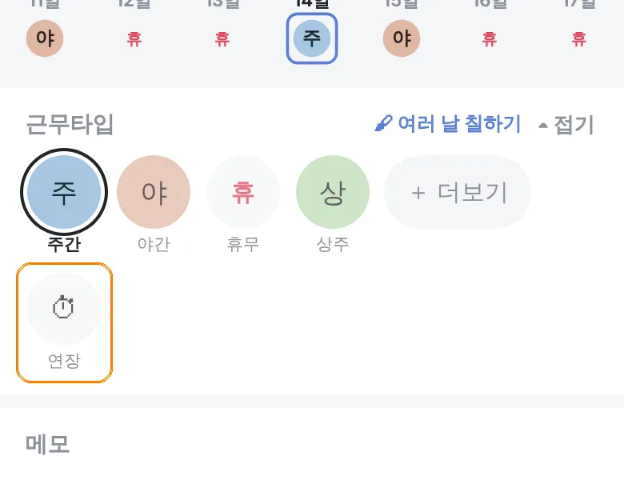
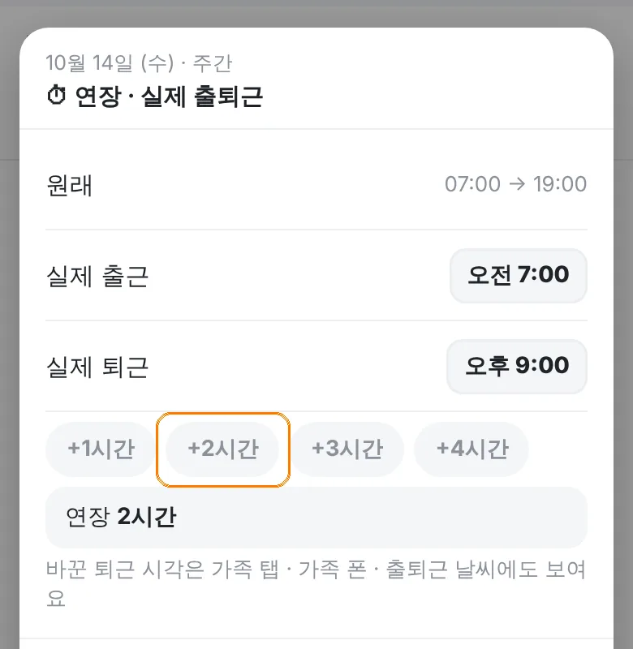

이럴 때오늘 퇴근이 2시간 늦어졌을 때. 남겨 두면 이번 달 연장 시간과 예상 월급에 들어가고, 가족 폰에도 늦게 끝나는 게 보여요.
먼저: 설정 › 부가 기능에서 근무 통계 · 수당이 켜져 있어야 ⏱ 연장이 보여요.
- 달력에서 그 날짜를 눌러요. 근무타입 줄 끝에 ⏱ 연장이 있어요.

- +2시간을 누르면 실제 퇴근이 오후 9시로 바뀌고 "연장 2시간"이 떠요. 한 번 더 누르면 시간이 더 붙어요.

- 정확한 시각이면 실제 퇴근 칸을 눌러 직접 고쳐요.
- 창을 닫으면 저장돼요. 달력 날짜 칸에 "+2시간"이 붙어요.